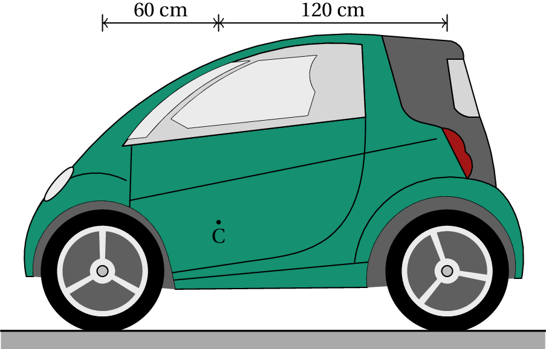
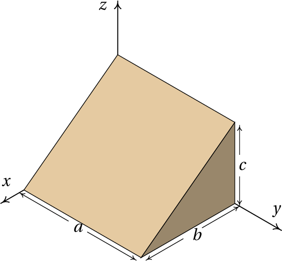
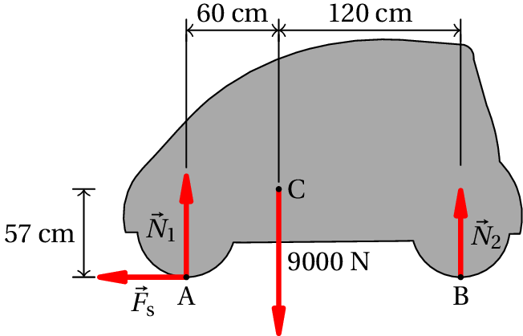
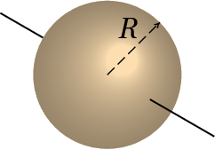
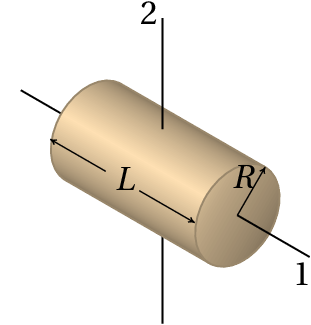
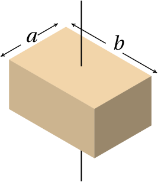

In order to make a curve with a bicycle or a motorcycle there must be sufficient friction between the tires and the road, because the frictional force provides the centripetal force that makes the bike follow the curved trajectory. But the frictional force also makes the rider and the bike rotate sideways in the direction opposite to the center of the curve; to counteract that rotation the rider tilts with the bike, making their weights produce a tendency to rotate in the opposite direction. The tendency to rotate produced by a force is called moment and will be studied in this chapter. The high speeds in motorcycle races imply larger tilt angles. To make the motrocycle tilt more, the rider first turns the wheel in the opposite sense of the curve and moves his body away from the motorcycle in the direction of the center of the curve.
The vectors introduced in chapter 2 are free vectors, which are considered equal if they have the same magnitude, direction and sense, regardless of the point of the space where they are. In the case of forces, it is not enough to know their magnitude, direction and sense. For example, when a force is applied to a door to close it, besides the magnitude, direction and sense of the force, the point at which that force is applied will also be important. The further away from the hinges the force is applied, the easier it is to close the door. The force required to close the door would be very high if it was applied at a point near the hinges.
Suppose we want to move a chair to another place, lifting it with just one hand. If the chair weights 40 N, and its center of gravity is at the point C, as shown in figure 5.1, we would probably put our hand at a point P on the back of the chair and apply an upward force of 40 N to lift it. As the chair moves up, it will rotate until it reaches an equilibrium position as shown on the right-hand side of the figure, where the weight and the force applied by the hand are in the same vertical line. If we could apply the upward force in a point in the same vertical line as the center of gravity C, the chair would go straight up without rotating.
Figure 5.1: A chair of weight 40 N being lifted with an upward force.
We conclude that to predict the effect of a force it is necessary to know its magnitude, direction, sense and also its line of action, which is the straight line passing through the point where the force is applied, in the direction of the force. A force produces different effects if it is moved to a different line of action, even if its magnitude, direction and sense are kept equal.
Figure 5.2: Three equivalent points.
These kind of vectors, with a specific line of action, are called sliding vectors. The point where they are applied is not important, as long as it is in their line of action. In the example of the chair being lifted, the same upward force could have been applied at points Q or R in figure 5.2, which are in the same vertical line as P, and the effect would have been the same. The chair would rotate in the same direction, with the same angular acceleration. Therefore, it is equivalent to assume that is applied in P, Q, R or any other point in its line of action. However, even if the initial effect is the same, once the chair starts to rotate, the higher the point where is applied, the more the chair will rotate until the line of action of its weight coincides with the line of action of , reaching the equilibrium position.
Whenever it was necessary to add forces in chapter 4, we assumed that they could be moved freely and added together as free vectors, using the parallelogram rule. In the following sections it is shown that this sum of forces as if they were free vectors is not wrong, as long as the rotation effect introduced when moving a force to a different line of action is also taken into account. The translation of a body is determined by the resultant force, which can be obtained adding all external forces as free vectors. The rotation, or lack of it, is also determined by the external forces but regarded as sliding vectors and not as free vectors.
To determine how forces and other sliding vectors must be added, let us start by the simplest case, when the forces to be added have the same line of action. For example, if we are going to lift a book that is resting on a horizontal table, as in figure 5.3, in order to apply an upward force in the same vertical line as the center of gravity we could drill a hole through the book, going through the center of gravity, and pass a string through the hole attaching it to a washer on the bottom of the book.
When we pull up the string with a force , that force will be collinear with the weight; namely, they act along the same line of action, so the two forces can be moved to a common point in that line, and added as free vectors. If is bigger than the weight , the book accelerates upwards without rotating; is then reduced to to maintain a constant speed. Once the book is approaching the height where we want it to be, we reduce the force on the string even more, making it smaller that the weight so the speed will decrease until it stops, at which point we increase the force again, balancing the weight. book stop at some height. We are so used to following that process every time we lift an object, that we might not be aware of its complexity. But if we have to program a robot arm to do it, we would have to follow all of those steps.
If we don't want to drill a hole through the book to lift it, we could also pass a strip of paper under it, as shown in the left side of figure 5.4, and pull up the two ends of the strip keeping the book horizontal as it raises. We would then be applying two forces and as shown in the middle of the figure.
Those two forces are called concurrent, because their lines of action cross each other at a point P. We can then move each force along its line of action, to the point P, and add them there as free vectors to give the resultant force , as shown in the right side of figure 5.4. Notice that, if the book is lifted keeping it horizontal, it does not rotate so the resultant force must be collinear with the weight . That means that point in figure 5.4 the point P and the center of gravity C of the book must be in the same vertical line; the magnitudes and directions of the two forces and must be such that their lines of action cross in a point which is in the same vertical as the center of gravity.
When the lines of action of two forces and are parallel, as is the case in figure 5.5, we can use the following procedure to add them: two additional collinear forces and are added, in a direction perpendicular to the lines of action of and , as shown in the middle of the figure. That does not alter the system, since the sum of those two additional forces is zero. The force is then added together with , in their common point, giving a force , and is added together with , in their common point, giving a force . These two new forces and are now concurrent and can be added in their common point P (right side of figure 5.5) giving the resultant force .
Notice that the resultant force is also in the same direction as the original forces and with magnitude equal to the sum of the magnitudes of and , since teh sum of the free vectors and at P equals the sum of and as free vectors:
If and had opposite directions, the resultant force would be inn the direction of the force with the biggest magnitude and the magnitude of the resultant would bee equal to the difference between the magnitudes of the two forces.
Figure 5.6: Line of action of the resultant.
The line of action of the resultant force will alos be parallel to the lines of action of the two forces and . To determine the distances and between the lines of action of the parallel forces and , and their resultant , we observe in figure 5.6 that the distance between the common point P in the lines of action of and and point Q, where the line of action of the resultant crosses the segment joining the points where and are applied, is equal to:
where and are the angles that and make with the perpendicular to their lines of action. Since is the sum of the two perpendicular forces and , and is the sum of the two perpendicular forces and , the tangents of those two angles are
and substituting those two expressions into equation 5.2, we arrive to the so-called law of the lever:
Therefore, to lift the book with two vertical forces without making it rotate, it would be necessary that the ratio between the magnitude of the forces, , be the inverse of the ratio between their distances of their lines of action to the center of gravity, .
The law of the lever can be explained by introducing the concept of moment of a force about a point. The moment of a force about a point O is defined as the product of the magnitude of the force by the distance from point O to the line of action of :
is called the moment arm of the force and the moment about a point is also called torque. The moment measures the rotational effect produced by the force when point O is fixed. The further away the action line of the force is from point O, the bigger the rotation effect it produces. This explains why it is more difficult to close or open a door if the force is applied too close to the hinges: the moment of the force about the hinges is small when its line of action is close to the rotation axis of the door.
Figure 5.7: Moment of a force.
If is the position vector of the point P where the force is applied, relative to point O, the moment arm of the force about point O is equal to , where is the angle between the vectors and (figure 5.7). We then conclude that the moment of the force about point O is equal to,
It should be noted that ( ) is the component of the force in the direction perpendicular to the position vector , that is, the moment of the force about O is also equal to the product of the distance , from its point of application to point O, times the component of the force perpendicular to . The moment produced by a force is due solely to its component perpendicular to the segment from the reference point to the point where the force is applied.
Equation 5.6 shows that the moment of a force is also equal to the magnitude of the cross product between the position vector and the force. It is convenient to define the vector moment:
The vector produces a rotation about O on a plane perpendicular to and in the sense given by the right-had rule. In figure 5.7 the moment is a vector that points outside of the figure and can be represented by an arc with an arrow in the sense of the rotation.
Figure 5.8: Couple.
The method described to add parallel forces would fail when the two forces constitute a couple, which are two parallel forces with the same magnitude but opposite directions, as in figure 5.8. In that case and would still be parallel and could not be added as concurrent forces. However, in that case equation 5.1 shows that the resultant will be zero. Thus, a couple will not produce any translation, just rotation. The total moment about the origin O is the sum of the moments of the two forces:
The two position vectors of the points Q and P depend on the choice of the origin O, but their difference does not change if the origin O is moved to another point.
That means that the couple produces a moment that does not depend on any reference point,
The couple of the two forces in figure 5.8 is a vector pointing out of the figure, represented by the circular arc with an arrow in the counterclockwise direction.
A force applied at a point P can be moved to another point Q, outside its line of action, using the procedure illustrated in figure 5.9: we add two equal and opposite forces and in points P and Q, which a moment that we will call (in the clockwise sense in the case of the figure); in order to keep the system the same, we must then add also a couple (in the anti-clockwise sense) which will balance the moment . We are then left with two equal and opposite forces at point P, which will eliminate each other leaving only the force at point P, and the couple :
which is equal to the moment that the original force in P produced with respect to the point Q where it was moved.
We can then conclude that the resultant of a system of force is equal to their sum as free vectors and can be placed at any point Q, provided we also include a resultant couple which is equal to the sum of the moments of all the forces with respect to that point.
When the direction of the forces are on the same plane, it will be convenient to use Cartesian coordinates and on that plane, with origin at the point where we want to place the resultant force. With that choice of coordinates, the moment of each force with respect to the origin will only have a component, equal to the 2-by-2 determinant:
where and are the coordinates of the point where force acts. With a total of forces, all on the plane, the resultant force and couple are the following
The resultant force can then be moved to another line of action, a distance from its line of action in Q, in order to eliminate the resultant couple leaving just the resultant force.
When the lines of action of the forces are not in the same plane, the resultant couple will also include a component parallel to the resultant force , which cannot be eliminated by moving that resultant force to another point. In that case the simplest form of the resultant is a force and a couple in the same direction.
A rigid body is in equilibrium if the sum of all forces acting on it gives a resultant force and couple both equal to zero. Notice that in that case, the resultant couple will be zero with respect to any point, because moving the resultant force to any other point does not introduce any additional moment. When a rigid body is in equilibrium, it will not have any linear or angular acceleration; therefore, it could be in a static position or moving with constant velocity (linear and/or angular).
Thus, when we know that a rigid body is static or moving with constant velocity, the equilibrium conditions establish that the vector sum of all external forces is equal to zero, and the sum of the moments of those forces, relative to any reference point, is also equal to zero. zero.
The car in the figure is stopped on a horizontal road. The car weighs 9000 N and its center of gravity, C, is 60 cm behind the front wheels axle and 120 cm in front of the rear wheels axle. Find the normal force on each tire.
Resolution. The car is in equilibrium, since it is at rest. The figure on the right shows the free-body diagram for the car; is the sum of the two normal forces on the front tires and is the sum of the normal forces on the rear tires. If there are frictional forces in the tires, they can not be calculated when we consider the whole car as a single rigid body; all we can conclude is that the sum of the frictional forces in the four tires is zero. The condition for the sum of the vertical forces to be zero is:
To find the value of these two variables, we must also use the condition that the sum of the moments of all forces, about any chosen point, must be zero. The sum of the moments about point A is:
This value could then be substituted in the condition for the sum of the vertical forces, but it is also possible to use the condition that the sum of moments about point B is also zero:
Assuming that the center of gravity is at the same distance from the left and right tires, the normal forces on the two front tires would be the same and therefore the normal force on each front tire would be N. And in each rear tire the normal force would be N.
If the car were moving with constant velocity, it would still be in equilibrium but we would then have to take into account the air resistance which is a force pointing to the right and a little downwards. There would be frictional forces in the tires, the sum of which would be equal and opposite to the horizontal component of the resistance force of the air. Since the frictional forces and the air resistance force act on different lines of action, they would produce a couple that would make the car rotate, increasing the normal forces in the rear tires and diminishing the normal forces in the front tires. To compute that couple, it would be necessary to know the drag coefficient , the speed of the car and the point of application of the resultant resistance force.
The mass in a rigid body is continuously distributed in a volume. If the total mass of the body is and is the infinitesimal mass that exists in the neighborhood of a point in the body, then
Where the integral is a triple integral, within the volume occupied by the solid, since is the product of the density times the infinitesimal volume .
The position vector of the center of mass, , is defined as the mean value of the positions of the parts of the body, weighed by their mass; namely,
Find the position of the center of mass of the homogeneous solid shown in the figure.
Resolution. The volume of the solid is delimited by the 5 planes , , , and .
The infinitesimal area Is equal to the density times the infinitesimal volume, which in cartesian coordinates is . We begin by calculating the total mass from equation 5.13:
Since the body is homogeneous, is constant. In Maxima, the three integrals must be calculated sequentially; the variable p will represent the density
Although the intermediate results have not been shown, they are stored in the %o1 and %o2 variables.
To compute , the same volume integral is repeated, changing the integrand from to ( )
We conclude that the position vector of the center of mass is: .
In every rigid body there is always a single point which is the center of mass. If the origin is chosen exactly at the center of mass, the integral in equation 5.14 will be zero for each of the three components:
The integrals in 5.15 are all zero only if the origin is at the center of mass.
Differentiating the two sides of equation 5.14, with respect to time, gives the expression of the velocity of the center of mass:
That is, the velocity of the center of mass is the average of the velocities of all parts of the body, weighted by their masses.
And differentiating equation 5.16 with respect to time we obtain the acceleration of the center of mass:
Which is the mass-weighted average of the accelerations of all the parts of the body.
If the reference in which the accelerations are measured is an inertial reference frame, the product is equal to the total force acting on the part with mass :
Notice that whenever a rigid body is accelerating, there must be an infinitesimal force applied to each part of the body, making them all move together. In most points that force is due solely to the internal forces of contact between the parts of the body, forces that are triggered throughout the body by the action of external forces , , …, applied in points: 1, 2, …, , where the force includes the contact forces plus a external force. The differential gives the variation of the total force throughout the body.
Substituting the expression 5.18 into equation 5.17, we conclude that,
In the integral on the left-hand side, for each internal contact force that exists at one part, there will be another equal but opposite force at another neighboring part, due to the law of action and reaction. Therefore, all the internal forces of contact will be eliminated and the integral will give the sum of the external forces, , , , , Which is the resultant force on the rigid body. As such, equation 5.19 leads to,
This important result is the law of motion for the translation of a rigid body:
The motion of the center of mass of any rigid body with mass is equal to the motion that would have a point particle with mass under the action of a force equal to the resultant force on the rigid body.
Remember that the resultant force is obtained by adding all external forces as if they were free vectors. If the resultant force is zero, the center of mass will either be at rest or in a state of uniform rectilinear motion, but other points on the rigid body may have more complicated motions.
In the case of the weight, the external force is applied in all parts of the rigid body and the resultant force is . Hence, equation 5.19 gives,
If the acceleration of gravity is the same in all points of the body, the integral on the left-hand side will be equal to and we conclude that the acceleration of the center of mass equals the acceleration of gravity and that the center of gravity, i.e. the point where the total weight acts, coincides with the center of mass. For rigid bodies with size much smaller than Earth, the acceleration of gravity can be considered constant throughout the whole body and the center of mass is at the same point as the center of gravity.
Let us consider for example a triangular piece of board. Hanging it by one of the vertices, it will begin to oscillate until it stops in a position where the center of gravity is in the same segment of vertical line that passes through the vertex; by tracing this segment in the triangle and repeating the procedure for the other two vertices, the point where the three segments intersect will be the center of gravity and center of mass. If the density of the triangle is equal at all points, each of the vertical segments will be the median that divides the triangle into two parts with the same area and mass; therefore, the center of mass is at the intersection of the three medians. In bodies with symmetrical shapes and constant density, the center of mass lies in the geometric center. Figure 5.10 shows three other examples.
In a rigid body moving along any path without rotating, the acceleration of all points is the same at every instant, equal to the acceleration of the center of mass, which is equal to the resultant force divided by the mass of the body. As the body does not rotate, the resultant couple about the center of mass should be zero. It should be noted that resultant couple is zero only about center of mass and not about other points. The resultant couple about an arbitrary point P, equals the couple of the resultant force, applied at the center of mass.
The same car of example 5.1, accelerates during 20 s, starting from rest and reaching a final speed of 60 km/h. Knowing that the center of gravity is 57 cm high above the ground, and assuming that the acceleration is constant, determine the normal forces and the frictional forces in the tires, at the instant when it starts moving.
Resolution. When the car starts moving there is no air resistance force, because its speed is zero. Therefore, the only horizontal forces, responsible for the acceleration, are the static frictional forces between the tires and the road. The following figure shows the free-body diagram of the car.
is the sum of the two normal forces in the two front tires, is the sum of the normal forces in the rear tires and is the sum of the frictional forces in the four tires. Since the tangential acceleration is constant, it is then equal to increase of the velocity, divided by the time it took to increase:
The law of motion for translation leads to the following equations:
Since the car is not rotating, the resultant couple about the center of mass must be equal to zero. The weight does not produce any moment about the the center of mass. The moments of and about the center of mass are in the clockwise direction and the moment of about the center of mass is in the counterclockwise direction. The resultant couple about the center of mass is then:
The solution of that system of the 3 equations is,
The total frictional forces in the four wheels is 765 N, the normal force on each front tire is 2879 N and the normal force on each back tire is 1621 N. Notice that in the free-body diagram it makes no difference to put the frictional force in the front wheels or the back wheels; but since it is a traction force, it will really be produced on the wheels where the traction of the car is (wheels made to rotate by the engine).
The dynamics of the rigid body consists of the study of the effects of external forces and couples on the variation of its six degrees of freedom. The trajectory of any point in the body, used as reference point, gives the variation of three of these degrees of freedom. The remaining 3 degrees of freedom are 3 angles. In the spinning top shown in figure 5.11, the two angles and define the direction of the axis of the top; a third angle, , is related to the rotation of the top with respect to its axis. In this case two of the angles, and , vary with time and therefore, there are two angular velocities and .
The top is spinning around its axis in the direction indicated in the figure for the angle , with angular velocity . Therefore, its angular velocity vector, , is in the direction of its axis and from the ground to the upper part. Since the axis of the spinning top is not in a vertical position, its weight and the normal force on the tip of the top produce a couple in the direction in which increases. That couple produces angular acceleration tangent to the circumference shown in the figure in the direction shown for the angle , which makes the angular velocity vector rotate with angular velocity along the circumference.
The general motion of a rigid body is easier to study using lagrangian dynamics, instead of the vector dynamics used in this chapter. We will conclude the chapter considering a simpler case in which the axis of rotation does not move, so there is only one angle changing with time.
When the axis of rotation of a rigid body remains fixed relative to an inertial frame, Newton's second law will be valid for the accelerations measured in the frame of the rigid body. Thus, equation 3.35 allows us to calculate the force acting on each part with differential mass
Each of these forces produces a moment about the origin, but since the rigid body can only rotate around the fixed axis , it is only relevant to compute the component of the moment, obtained using only the projection of the position vector on the rotation plane:
By integrating in the volume of the rigid body the component of the resulting moment is then,
The angular acceleration was placed outside the integral, because it is the same at all points of the rigid body. The integral on the right-hand side,
Is called moment of inertia of the rigid body, relative to the axis.
In the integral , all moments of the internal forces of contact will cancel, as a consequence of the law of action and reaction, and the result will be resultant couple of the external forces, , , …, . Thus, equation 5.24 leads to the law of motion for rigid body rotation around a fixed axis:
In a rigid body that can only rotate around a fixed axis, the resultant couple with respect to a point in the axis has component along that axis equal the product of the body's moment of inertia relative to the axis, times the angular acceleration.
Determine the moment of inertia of a homogeneous cylinder of radius and height , around its axis.
Resolution. It is convenient to use cylindrical coordinates with the axis at the axis of the cylinder. The volume of the cylinder is defined by the conditions: , , (we use for the cylindrical coordinate, to avoid confusion with the cylinder radius).
The differential element of volume in cylindrical coordinates is ( ) and hence, , where is the density. The moment of inertia is then,
Notice that the mass of the cylinder is obtained by the integral:
Thus, the expression for the moment of inertia is:
The role played by the moment of inertia in rotations is similar to the role of the mass in translation motions. The bigger the moment of inertia, the less the angular acceleration that the resultant couple will produce. Observe the similarity between equation 5.26 and Newton's second law.
Table 5.1 shows the expressions of the moment of inertia of some solids around the axes that pass through their center of mass. The moment of inertia is always directly proportional to the mass of the body. The radius of gyration is a typical length for each geometrical shape, defined as the square root of the moment of inertia divided by the mass:
| Sphere | Cylinder | Parallelepiped |
|---|---|---|
|  |  |  |
| Axis 1: | ||
| Axis 2: |
The moment of inertia around an axis through the center of mass can be used to obtain the moment of inertia around any other parallel axis out of the center of mass, using the parallel-axis theorem :
where is the mass of the body and is the distance between the two parallel axes. It is also possible to compute the moment of inertia of a body by adding the moments of inertia of the various parts of it, since the integral 5.25 can be written as the sum of the integrals in the various parts.
The moment of a thin bar of length can be obtained from table 5.1, either for the expression for a cylinder, around axis 1 and in the limit , or from the expression for a parallelepiped with and
A pulley with a shaft attached to a fixed base is an example of a rigid body with a fixed rotation axis. If the pulley is homogeneous, the center of mass will also be on the axis of the shaft. Figure 5.12 shows a pulley of mass and radius , with a string that moves with the pulley without sliding on its surface. The external forces and couples are the weight, , the tensions in the string in both sides of the pulley, and , the contact force on the shaft, and a couple produced by friction between the shaft and the pulley, in the direction opposite to the rotation of the pulley (the pulley was assumed rotating clockwise in figure 5.12).
The weight of the pulley and the contact force do not produce moment around the axis. Since the pulley is a cylinder, using the expression for the moment of inertia in table 5.1, the equation for the resultant couple is (assuming the angular acceleration is in the clockwise sense),
When friction on the shaft can be ignored,
where is the tangential acceleration of a point on the string. Note that, regardless of the radius of the pulley, when its mass is much smaller than and , it may be assumed that the tension is equal on both sides of the rope.
(To check your answer, click on it.)
Questions: 1. E. 2. C. 3. B. 4. D. 5. C.
Problems
(Click to continue)
(Click to continue)
(Click to continue)
(Click to continue)
(Click to continue)
(Click to continue)
(Click to continue)
(Click to continue)
(Click to continue)
(Click to continue)
(Click to continue)
(Click to continue)
(Click to continue)
(Click to continue)
(Click to continue)
(Click to continue)
(Click to continue)
(Click to continue)
(Click to continue)
(Click to continue)
(Click to continue)
(Click to continue)
(Click to continue)
(Click to continue)
(Click to continue)